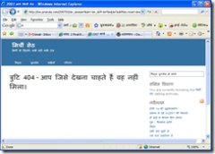
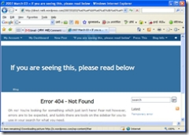
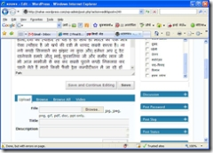

( यहाँ प्रस्तुत फोटो मिर्ची सेठ उर्फ पंकज नरूला जी के चिट्ठे से लिया गया है, जो हिन्दी के बहुत पुराने और जाने माने चिट्ठाकार है, जो इस तरह की भूल नहीं करेंगे यह शायद असावधानी से या जल्दबाजी में हुई होगी) यह चिट्ठा पढ़ने के लिये एड्रेस बार में .com के बाद लिखे बहुत से अक्षर मिटाने पड़ते हैं या फिर दोबारा से शीर्षक पर क्लिक करना पड़ता है। इस तरह के एरर में कई बार टिप्पणियाँ करने या पढ़ने में भी परेशानी होती है।अब देखिये सुषमा कौल जी के चिट्ठे पर टिप्पणी देने के लिये क्लिक करने पर क्या दिख रहा है

इस एरर से बचने का आसान उपाय है Post Slug (पोस्ट स्लग)करना। या आसान शब्दों में यों कह सकते हैं; या पोस्ट को शीर्षक देना। उपर बताये फोटो में नरूला जी की साईट में अगर पोस्ट स्लग अगर सही हुआ होता या शीर्षक सही हुआ होता तो लिंक शायद कुछ यूँ होती http://ms.pnarula.com/200608/happyholi जब कि अभी यह दिख रहा है। http://ms.pnarula.com/200608/जीत-व-जीतने-वाले/ अब इस तरह के लिंक को किसी को देने में भी मुश्किल होती है।

इस चित्र को ध्यान से देखिये, जहाँ हम अपनी रचनायें लिखते हैं, उस पेज का फोटो है, दाँयी ओर Post Slug+ लिखा हुआ दिख रहा है। इस + पर क्लिक करने पर नीचे एक छोटी सी खिड़की खुलेगी उसमें अपने चिट्ठे के विषय से सम्बन्धित की वर्ड या पोस्ट का शीर्षक अंग्रेजी में लिख देवें। उदाहरण के लिये आप अपनी पोस्ट में चुटकुले लिख रहे हैं तो उस खिड़की में jokes या cutakule लिख देवें और आपने जहाँ + पर क्लिक किया था और अब - हो चुका है; उस - पर क्लिक करें, और बाद में प्रकाशित (Publish) कर देवें। बस आपकी समस्या का इलाज हो चुका है। है ना आसान?
अन्त में एक बात और, अगर आप विन्डो के लाईव राईटर से लिखते हैं तो आप को लाईव राईटर से लेख लिखने के बाद वर्डप्रेस.कॉम में जाकर पोस्ट को सुधारना होगा। जैसा मुझे इस पोस्ट को प्रकाशित करने के बाद करना होगा। क्यों कि मेरा लिंक इस तरह का होगा विन्डो लाईव राईटर के नये संसकरण में इस परेशानी का को हटा दिया गया है अब आप, लाईव राइटर से लिखते समय भी पोस्ट स्लग कर सकते हैं ( दिनांक 19.11.2007)
http://nahar.wordpress.com/2007/03/06/%e0%a4%a8%e0%a4%af%e0%a5%87-%e0%a4%9a%e0%a4%bf%e0%a4%9f%e0%a5%8d%e0%a4%a0%e0%a4%be%e0%a4%95%e0%a4%be%e0%a4%b0%e0%a5%8b%e0%a4%82-%e0%a4%95%e0%a5%87-%e0%a4%b2%e0%a4%bf%e0%a4%af%e0%a5%87/ जब कि मैं करना चाहता हूँ http://nahar.wordpress.com/2007/03/06/fornewbloggers
मूल पोस्ट यहाँ है